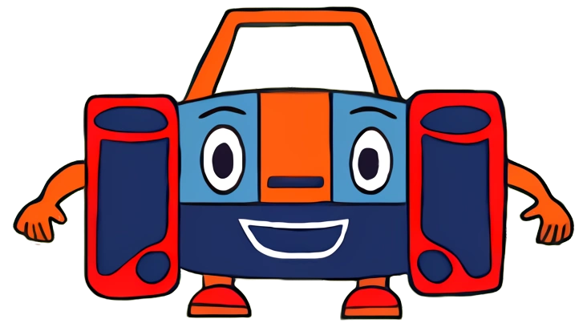
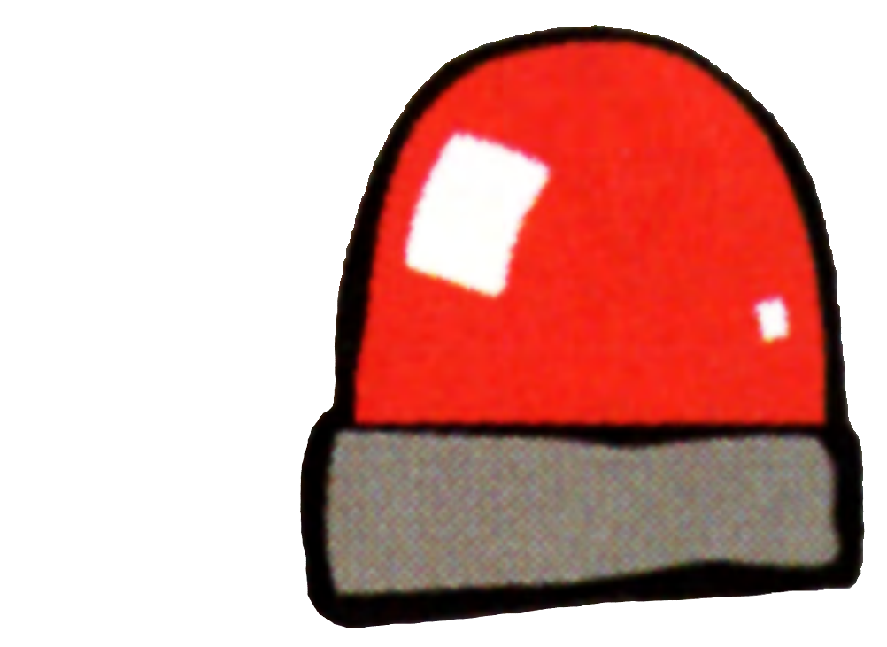
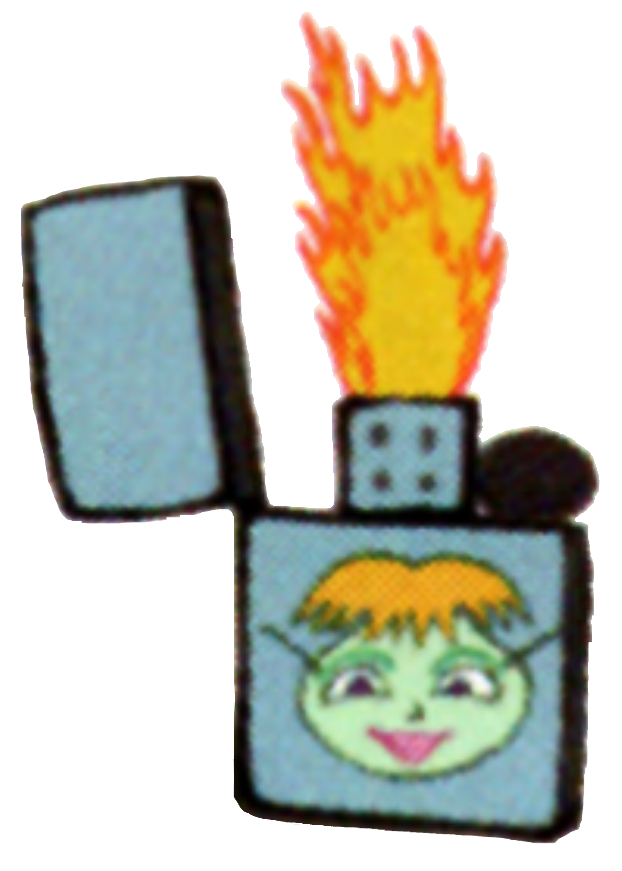
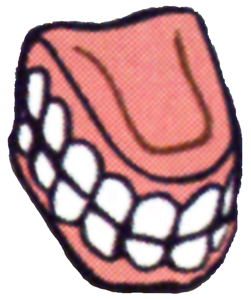

From the very first cue of "Stage 1: Chop Chop Master Onion's Rap" to PaRappa 2's noodle-fuelled finale, every word in the PaRappa series is sung, rapped, or spoken — never delivered by a synthesiser. NanaOn-Sha and Sony Computer Entertainment built the games around a tight ensemble of working New York musicians, Broadway-bound vocalists, and Tokyo radio personalities. Most of the lead cast members were chosen because they were already touring or recording artists, and Masaya Matsuura wrote the rap stages around their actual voices. Below is a chapter-by-chapter look at the people you've been listening to since 1996, what they did across the three mainline games (PaRappa the Rapper, Um Jammer Lammy, PaRappa the Rapper 2) and the broader careers they led off-stage. 『パラッパラッパー』ステージ1「タマネギ先生のラップ」最初のひと声から、『パラッパラッパー2』のヌードル決戦まで、シリーズに登場するすべての台詞、歌、ラップは生身の声優・シンガーが録音したものです。シンセや合成音声で代用された箇所は一切ありません。七音社とソニー・コンピュータエンタテインメントは、ニューヨークで活動する現役ミュージシャン、ブロードウェイ志望の若手シンガー、そして東京のラジオパーソナリティで構成された少数精鋭のキャストを軸にゲームを設計しました。主要キャストの大半は当時すでにライブやレコーディング活動を行っていたアーティストで、松浦雅也は「実際の声」に当て書きする形でラップステージを作曲しています。以下では、1996年以降あなたが耳にしてきた声の主たちを章立てで紹介し、3作の本編（『パラッパラッパー』『ウンジャマ・ラミー』『パラッパラッパー2』）における役割と、ステージ外での経歴をたどっていきます。

Born Lukan Outdawzman on May 9, 1971, the New York rapper performing as Dred Foxx is the voice and the actual rap delivery of PaRappa Rappa across all three mainline games. His audition take in 1996 essentially became the character's permanent vocal identity: every "Kick! Punch! It's all in the mind!" you can hum from memory is his. He returned to the booth for Um Jammer Lammy in 1999 (PaRappa appears as a guest rapper in the band's bonus stages) and again for PaRappa the Rapper 2 in 2001, where he was credited under his birth name John Simpson III. Outside the franchise he has also recorded as a solo hip-hop artist and reprised PaRappa for the 2012 PlayStation crossover PlayStation All-Stars Battle Royale. 本名ルーカン・アウトダウズマン、1971年5月9日生まれのニューヨーク出身ラッパードレッド・フォックスは、本編3作すべてでパラッパ・ラッパーの声と実際のラップを担当している人物です。1996年のオーディションで残したテイクが、そのままこのキャラクターの恒久的な声のアイデンティティとして固定されました——あなたが反射的に口ずさめる「Kick! Punch! It's all in the mind!」は、すべて彼のヴォーカルです。1999年の『ウンジャマ・ラミー』ではバンドのボーナスステージにゲストラッパーとして登場するパラッパを再演し、2001年の『パラッパラッパー2』では本名のジョン・シンプソン3世名義で再びマイクを握りました。シリーズの外ではソロのヒップホップアーティストとしても活動しており、2012年のPlayStationクロスオーバー作『PlayStation All-Stars Battle Royale』でもパラッパ役で復帰しています。

Mexican-American singer-actor Sara Ramirez (born Sara Elena Ramírez Vargas, August 31, 1975, Mazatlán, Sinaloa) recorded the role of Lammy in 1999 — Um Jammer Lammy was, in fact, their first ever voice-acting credit. Ramirez was a recent Juilliard fine-arts graduate who had just made their Broadway debut in Paul Simon's The Capeman (1998), and the breathy, anxiety-ridden delivery they brought to Lammy turned out to be the same expressive register that would later win them a Tony Award in 2005 for playing the Lady of the Lake in Spamalot. Ramirez reprised Lammy for her cameo appearances in PaRappa the Rapper 2 in 2001. メキシコ系アメリカ人のシンガー＆俳優サラ・ラミレス（本名サラ・エレナ・ラミレス・ヴァルガス、1975年8月31日メキシコ・シナロア州マサトラン生まれ）は、1999年にラミー役を吹き込みました。実は『ウンジャマ・ラミー』が彼女にとって人生初の声優クレジットでした。当時のラミレスはジュリアード音楽院の美術専攻を卒業したばかりで、ポール・サイモンのブロードウェイミュージカル『The Capeman』（1998）でデビューしたばかり。ラミーに与えた息の薄い、不安にうずくような声色は、のちに2005年のミュージカル『Spamalot』でレディ・オブ・ザ・レイク役を務めトニー賞（最優秀ミュージカル助演女優賞）を獲得することになる、その表現レンジと同じ系統のものでした。2001年の『パラッパラッパー2』にもラミー役で再登板。

Houston-born vocalist Michele Burks (November 16, 1968 – February 5, 2016) defined the singing voice of Katy Kat from 1996 onward and pulled double duty as the chicken cooking instructor Cheap Cheap the Cooking Chicken in PaRappa the Rapper. Her sharp, rangy alto carried Stage 2's "Cheap Cheap's Cooking Rap" and the entire MilkCan band performance in Um Jammer Lammy, where she returned as Katy on bass and lead vocals. Outside the games she was an active session and stage singer in the New York scene; the in-universe MilkCan album Make It Sweet!, released by Sony Music on June 19, 1999, features Burks performing the bulk of the lead vocals as Katy. She passed away in 2016 in her hometown of Houston, Texas. テキサス州ヒューストン出身のヴォーカリストミシェル・バークス（1968年11月16日 – 2016年2月5日）は、1996年以降ケイティ・キャットの歌声を決定づけた人物であり、初代『パラッパラッパー』では同時に料理担当の鶏先生チープ・チープ役も兼任しました。彼女のシャープでレンジの広いアルトは、ステージ2「チープ・チープの料理ラップ」と、続編『ウンジャマ・ラミー』におけるバンド・ミルクカンの全演奏を支えています。同作ではベース＆リードヴォーカル担当のケイティとして再登場しました。ゲーム外でもニューヨーク・シーンで現役のセッションシンガー／ステージシンガーとして活動し、1999年6月19日にソニー・ミュージックから発売された劇中バンド名義のアルバム『Make It Sweet!』では、ケイティ役としてリードヴォーカルの大半を担当しています。2016年、故郷ヒューストンで逝去しました。

Tokyo radio personality, rap producer, and recording artist Ryu Watabe (credited simply as RYU) is the most multi-tasking voice in the franchise. In PaRappa the Rapper (1996) he originated Chop Chop Master Onion, the muscular self-help guru of Stage 1, and the unbearable rich kid Joe Chin; in Um Jammer Lammy (1999) he added the chain-smoking Captain Fussenpepper of the airplane stage and the rocket-powered drummer Ma-san of MilkCan; and in PaRappa the Rapper 2 (2001) he reprised Master Onion and Captain Fussenpepper. His most famous on-record credit, however, predates the cast list: it was Watabe who flew with Matsuura to New York for the original 1996 sessions and improvised the English versions of the Japanese rap lyrics on the fly in the booth, effectively translating PaRappa as he performed it. 東京を拠点とするラジオパーソナリティ／ラッププロデューサー／レコーディングアーティストワタベリュウ（クレジットはRYU）は、シリーズ最多役の声の主です。1996年の『パラッパラッパー』ではステージ1のマッチョな自己啓発系師匠タマネギ先生と、いけすかない金持ちのジョー・チンを担当。1999年の『ウンジャマ・ラミー』ではヘビースモーカーのフセンペッパー大佐と、ロケット出力ドラマーマサン（ミルクカン）を追加。2001年の『パラッパラッパー2』では再びタマネギ先生とフセンペッパー大佐を演じています。ただし、彼の最も有名なクレジットはこのキャスト表より一段遡ります——1996年のオリジナル収録で松浦と共にニューヨークへ飛び、日本語のラップ歌詞をブース内でその場で英語にフリースタイル翻訳してみせたのが、ほかならぬワタベだったのです。彼は実演しながらパラッパを翻訳していたわけです。

R&B and jazz singer Kenya Hathaway — daughter of soul legend Donny Hathaway — provided the speaking and singing voice of Sunny Funny, PaRappa's flower-shaped crush, in PaRappa the Rapper (1996). Hathaway was already an established session vocalist in New York and Los Angeles when she recorded the role; in the years after PaRappa she became one of the most-in-demand background singers in American television, racking up roughly thirty appearances backing contestants on American Idol and contributing harmonies to records by the likes of Whitney Houston and Michael Bublé. The role of Sunny was recast for PaRappa the Rapper 2 with Lea Alomar, but Hathaway's original take is the version that defined the character. R&B／ジャズ・シンガーケニヤ・ハサウェイ——ソウルの伝説的シンガー、ダニー・ハサウェイの娘——は、1996年の『パラッパラッパー』でパラッパの想い人である花の少女サニー・ファニーの話し声・歌声を担当しました。録音当時のハサウェイはすでにニューヨークとロサンゼルスで第一線のセッションヴォーカリスト。パラッパ以降は全米でもっとも引っ張りだこのバックグラウンドシンガーの一人となり、『American Idol』ではコンテスタントの後ろで歌う形で約30回出演、ホイットニー・ヒューストンやマイケル・ブーブレらの作品にもハーモニーを提供しています。サニー役は『パラッパラッパー2』ではリア・アロマーへ交代しましたが、現在もキャラクターの定義となっているのは彼女のオリジナルテイクです。

Vocalist and Berklee College of Music professor Armstead Christian (May 20, 1951 – January 4, 2016) was the franchise's quietest workhorse, voicing the perpetually-sleepy DJ bear PJ Berri in all three mainline games as well as the loving but absent-minded PaRappa Papa in the original 1996 game and PaRappa 2. He joined the Berklee faculty in 1999 — the same year as Um Jammer Lammy — and spent the next sixteen years there teaching ear training, vocal sight-reading, and studio backing-vocal technique under the affectionate nickname "Papa Flo." Christian had been living with sarcoidosis since the late 1970s, a condition that progressively limited his lung capacity but never appeared to slow his work; he reprised PJ Berri one last time for 2012's PlayStation All-Stars Battle Royale. He died in New Bedford, Massachusetts in early 2016. ヴォーカリストでありバークリー音楽大学の教授でもあったアームステッド・クリスチャン（1951年5月20日 – 2016年1月4日）は、シリーズでもっとも目立たぬ働き者でした。常に眠そうなDJクマPJベリーを本編3作すべてで演じ、加えて1996年の初代と『パラッパラッパー2』では愛情深いが少々抜けているパラッパパパ役も兼任しています。彼がバークリー音楽大学の教員になったのは1999年——ちょうど『ウンジャマ・ラミー』と同じ年——で、以後16年間、聴音、ヴォーカル初見訓練、スタジオでのバックヴォーカル技術などを「Papa Flo（パパ・フロ）」の愛称で教え続けました。1970年代後半から肉芽腫性疾患のサルコイドーシスを抱え、肺機能が徐々に低下していたものの、活動ペースが落ちる様子はほとんど見られませんでした。2012年の『PlayStation All-Stars Battle Royale』でPJベリー役を最後に再演し、2016年初頭、マサチューセッツ州ニューベッドフォードで生涯を閉じています。

Jamaican-American dancehall and reggae MC Lenky Don (d. January 29, 2022) brought a deep-toned ragga delivery to Prince Fleaswallow, the green-haired flea-market philosopher of Stage 3. His "Pricks and stones may break my bones, but rap will never hurt me" remains one of the most-quoted lines in the franchise. He returned to play Fleaswallow in Um Jammer Lammy and PaRappa the Rapper 2, and his measured, unhurried cadence is the closest thing the games have to an actual reggae record. He continued working as a touring MC and producer in the New York / Brooklyn dancehall circuit until his death in 2022. ジャマイカ系アメリカ人のダンスホール／レゲエMCレンキー・ドン（2022年1月29日逝去）は、ステージ3に登場する緑髪のフリーマーケット哲学者プリンス・フリースワローに、深く落ち着いたラガ調の声色を与えました。彼の「Pricks and stones may break my bones, but rap will never hurt me」は、いまもシリーズで最も引用されるラインの一つです。続編『ウンジャマ・ラミー』『パラッパラッパー2』にもフリースワロー役で復帰しており、その悠然としたフロウは、本シリーズの中でもっとも本物のレゲエ・レコードに近い質感を持っています。逝去まで、ニューヨーク／ブルックリンのダンスホール・サーキットでツアーMC兼プロデューサーとして活動を続けました。
- PaRappa Rappaパラッパ・ラッパーDred Foxxドレッド・フォックス
- Sunny Funnyサニー・ファニーKenya Hathawayケニヤ・ハサウェイ
- Katy Katケイティ・キャットMichele Burksミシェル・バークス
- PJ BerriPJベリーArmstead Christianアームステッド・クリスチャン
- PaRappa PapaパラッパパパArmstead Christianアームステッド・クリスチャン
- Chop Chop Master Onionタマネギ先生RYU (Ryu Watabe)RYU（ワタベリュウ）
- Joe Chinジョー・チンRYU (Ryu Watabe)RYU（ワタベリュウ）
- Instructor MooseliniムースリーニSaundra Williamsソンドラ・ウィリアムズ
- Prince Fleaswallowプリンス・フリースワローLenky Donレンキー・ドン
- Cheap Cheap the Cooking Chickenチープ・チープMichele Burksミシェル・バークス
- MC King Kong MushiMCキングコング・ムシRichard Bushリチャード・ブッシュ
- LammyラミーSara Ramirezサラ・ラミレス
- Katy Katケイティ・キャットMichele Burksミシェル・バークス
- Ma-sanマーさんRYU (Ryu Watabe)RYU（ワタベリュウ）
- Chop Chop Master Onionタマネギ先生RYU (Ryu Watabe)RYU（ワタベリュウ）
- Rammyラミー（ラミー）Keva Hargroveキーヴァ・ハーグローヴ
- Chief Puddleチーフ・パドルRichard Bushリチャード・ブッシュ
- Cathy Pillerキャシー・ピラーLouise-Marie Mennierルイーズ＝マリー・メニエ
- Captain Fussenpepperファッセンペッパー船長RYU (Ryu Watabe)RYU（ワタベリュウ）
- Paul Chuckポール・チャックEverette Bradleyエヴェレット・ブラッドリー
- Teriyaki Yokoテリヤキ・ヨーコCarla Cookカーラ・クック
- PJ BerriPJベリーArmstead Christianアームステッド・クリスチャン
- PaRappa Rappa (bonus stages)パラッパ・ラッパー（ボーナスステージ）Dred Foxxドレッド・フォックス
- PaRappaパラッパDred Foxx (credited as John Simpson III)ドレッド・フォックス（ジョン・シンプソン三世名義）
- Sunny Funnyサニー・ファニーLea Alomarリア・アロマー
- PJ BerriPJベリーArmstead Christianアームステッド・クリスチャン
- Guru Antグル・アントDean Bowmanディーン・ボウマン
- Hairdresser Octopusタコ床屋Freedom Bremnerフリーダム・ブレムナー
- Instructor Moosesha #1ムーシャ先生 #1Kimberly Queenキンバリー・クイーン
- Instructor Moosesha #2ムーシャ先生 #2Aaminah Hassellアーミナ・ハッセル
- Chop Chop Master Onionタマネギ先生RYU (Ryu Watabe)RYU（ワタベリュウ）
- Colonel Noodleカーネル・ヌードルAndrew Alonzoアンドリュー・アロンゾ
- Katy Katケイティ・キャットShannon Whiteシャノン・ホワイト
- PaRappa PapaパラッパパパArmstead Christianアームステッド・クリスチャン
- LammyラミーSara Ramirezサラ・ラミレス
- Beard Burger Masterビアード・バーガー・マスターEthan Eubanksイーサン・ユーバンクス
- General Potterポッター将軍John Jamesジョン・ジェームズ
- MC King Kong MushiMCキングコング・ムシDean Bowmanディーン・ボウマン
- Boxy Boyボクシー・ボーイFreedom Bremnerフリーダム・ブレムナー